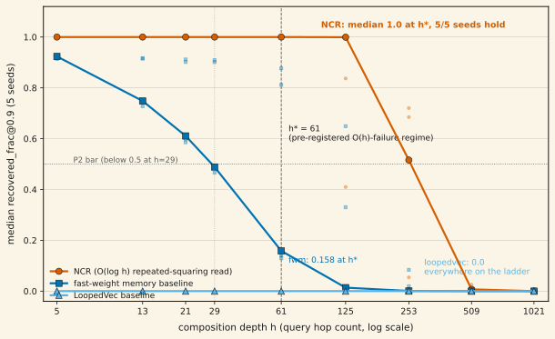
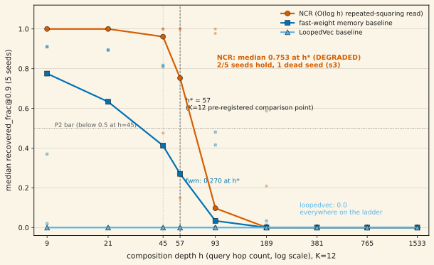
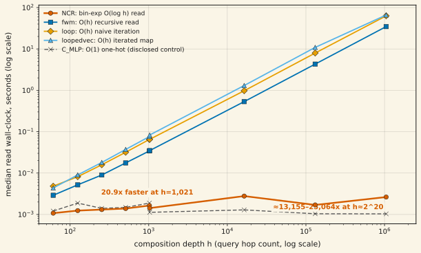

Native Composition Reads (NCR) writes a relation operator in context and reads its h-fold composition exactly at query time via scale-managed binary exponentiation — an O(log h) sequential read — against O(h) sequential baselines that must apply their own step h times. Wave-1 (K=8, 18 cells, 5 seeds per trained arm) tested this at a pre-registered depth h*=61, derived in advance from each seed's own measured phase-residual drift, in a regime designed so O(h) baselines are predicted to fail while NCR holds; Phase 2 (K=12, the same 18-cell structure, its own pre-registered asymmetric-confidence prediction) replicated the design at a second relation size. Cross-K verdict of record: Axis A WIN-PARTIAL, Axis B WIN, Axis C TIE. K=8, Axis A: WIN. Median recovered_frac@0.9 at h*=61 is 1.0 for NCR (per-seed 1.000/1.000/1.000/0.995/1.000 — 5/5 seeds clear the pre-registered ≥3/5 bar) against 0.158 for the best baseline (fast-weight memory) and 0.0 for the param-matched vector baseline — full HOLD-vs-FAIL separation, uniform across all four novel residue strata, zero mod-reducer confound signatures, zero post-front revivals. K=12, Axis A: SEP-PARTIAL. Median recovered_frac@0.9 at h*=57 is 0.753 for NCR (per-seed 0.149/1.000/0.753/0.000/1.000 — one seed never trained, disclosed below; 2/5 seeds clear the ≥0.9 bar), uniformly DEGRADED across all eight novel residue strata, against 0.270 (fast-weight memory) and 0.0 (LoopedVec) — both FAIL band. Per the pre-registered cross-K table (§3.2a), WIN (K=8) + SEP-PARTIAL (K=12) = WIN-PARTIAL — the publishable-with-caveat outcome pinned before either wave ran, not negotiated after the readout. Axis B (read cost, K=8 bar of record): WIN. The O(log h) read is 20.9× faster than the best O(h) arm at h=1,021 (bar: 10×); every O(h) arm fits linear-in-h at R² ≥ 0.998 while the O(log h) read stays flat from h=61 to h=2²⁰⁺⁵, where the measured gap is 2.6 ms vs 34.7–66.1 s (≈13,000–25,000×); K=12 supplementary timing (no bar moved) replicates the same separation, 33.7–63.8× at h=1,533. Axis C (calibration-locked trust curves): TIE at both K — 4/5 seeds track within 0.05 of measured cosine through h≤125 at K=8 and again at K=12, but diverge beyond each seed's own failure front, a disclosed limitation of the calibration lock rather than a defect. WIN-PARTIAL is the claim ceiling for Axis A: the K=12 prediction of record (P1-K12) held on 2 of 3 legs — every seed the calibration lock predicted would hold did hold, and the one seed it predicted would fail (untrained, disclosed below) did fail, but the directional "truth sits nearer the single-mode bound" leg was refuted; the conservative all-modes bound alone called all 5 K=12 seeds' hold/fail outcome correctly, a genuine calibration finding reported here rather than smoothed over. A pre-registered 5-seed K=12 extension (seeds 5–9, identical frozen config, NCR arm only) is queued to firm this up on n=10 rather than n=5; its outcome map is pinned before any of it runs and cannot downgrade WIN-PARTIAL — it either leaves the label unchanged or upgrades the K=12 band to WIN if ≥4 of the 5 new seeds hold. This page will be updated when it reports. Depth is input-supplied identically to every arm in every wave — learned depth selection was considered and killed analytically at design-review stage (not empirically tried) and is pre-registered dead. The param-matched vector baseline cannot fit the task even in-distribution (≈0.002 recovered_frac@0.9 at K=8) and travels with every claim as a disclosed strawman-risk; the fast-weight-memory baseline is load-bearing. 39.5 GPU-h serial-sum (wave-1 18.38 + Phase-2 21.12; program total incl. Phase-0 calibration overhead ≈40.2) against the 120 GPU-h program cap.
01What NCR reads, and why the cost class matters
An encoder writes a relation operator Z into context from the episode. To answer a depth-h query — "apply this relation h times" — a model needs Zhq for some query vector q. Every prior architecture in this space gets there by applying a step h times, sequentially: chain-of-thought spends h tokens, looped transformers spend h loops, recurrent composers spend h steps, and fast-weight read mechanisms (FWM) recurse h times through a nonlinear read. All of these are O(h) sequential cost, and all of them compound per-step error as h grows.
NCR instead computes Zh by repeated squaring — binary exponentiation — with Frobenius renormalization at both the squared base and the running product at every step (a positive scalar per step is invisible to cosine similarity, so this is exactly cosine-preserving, and it is required: unmanaged fp32 squaring overflows around h≈83 in this regime). That is ⌈log₂h⌉ squarings plus at most ⌈log₂h⌉ products — O(log h) sequential operations to reach any depth, however large. The question this program (wave-1 at K=8, replicated by Phase 2 at K=12) answers is not "can a model do this at all" (FWM already showed in-context relational composition works at small, fixed hop counts) but two narrower, harder things: does the O(log h) read stay exact at depths where O(h) baselines' compounding error has destroyed recovery, and is the read actually cheaper where it matters.
The three trained arms
| arm | what it is | sequential read cost |
|---|---|---|
| NCR (contender) | encoder writes Z in context; read = scale-managed binary-exponentiation Zhq | O(log h) |
| fast-weight memory (FWM-read) | the SAME written Z, read via h-fold recursive one-hop LN reads (Schlag, Munkhdalai & Schmidhuber, ICLR 2021 — cited and distinguished: FWM fixes hop count at 3 and never pushed recursive reads deeper) | O(h) |
| LoopedVec | param-matched iterated VECTOR map: a trained step function applied h times to a vector state, same episode input, same h signal | O(h) |
A fourth arm, C_MLP one-hot(h), is Task E's inherited O(1) control — architecturally unable to extrapolate past its training vocabulary by its own design, never a comparison of record, run only as a disclosed weak control (and the source of this wave's one defect — see §07). All arms receive the identical raw-integer h signal; no arm receives one-hot(h) or any h mod K feature. Trainable-parameter match is held to ±15% across arms.
02The pre-registered regime: where O(h) is predicted to fail
The comparison point h*=61 was not chosen after the fact. Each converged K=8 operator has a measured per-mode phase residual δ from calibration; under h-fold linear composition, phase error drifts as h·δ, and the recovered_frac@0.9 bar tolerates a bounded aggregate drift. That arithmetic gives each seed a predicted hold-horizon band, and h*=61 sits inside the conservative end of that band for the calibration seeds — the depth was fixed before wave-1 launched, from numbers measured on a different (Task-E precedent) run, not tuned to this one. Two predictions were registered alongside it: P1 — at least 3 of 5 NCR seeds hold recovered_frac@0.9 ≥ 0.9 at h*, with NCR's own failure front (the first ladder point any seed drops below 0.9) landing between h≈87 and h≈442; and P2 — each O(h) comparison-of-record arm falls below median recovered_frac@0.9 = 0.5 by h=29, the last ladder grid point before h*. Both are falsifiable in the direction that would have hurt the claim, and both were checked against the raw per-cell JSONs before anything on this page was trusted. The K=12 replication (§03 below) used the identical arithmetic against its own archived phase residuals, landing at h*=57 with a pre-registered asymmetric-confidence prediction (P1-K12) rather than a flat ≥3/5 bar, since the single-mode vs. all-modes drift bounds diverge more at K=12 than at K=8.
03Axis A: exact composition holds where O(h) baselines fail
Every number below is recomputed directly from the 15 archived wave-1 cell JSONs (5 seeds × 3 trained arms), independently reproducing the committed wave1_verdict.json bit-for-bit at h*=61 and at the P2 pinned point h=29 before the figure below was plotted.

The full recomputed fast-weight-memory decay curve, median across 5 seeds: 0.923@5 → 0.748@13 → 0.611@21 → 0.489@29 → 0.158@61 → 0.014@125 → 0.001@253 → 0.000@509 — a clean, smooth compounding-error decay, exactly the shape P2 predicted. LoopedVec reads 0.000 at every ladder point from h=5 to h=1021.
NCR's HOLD band is uniform across all four "novel" residue strata swept at h=60–63 (no stratum drops band), and the failure-front analysis found zero mod-reducer confound signatures — a baseline that had merely learned arithmetic mod-K reduction from shallow supervision would be residue-exact at every depth with no decay front; NCR instead drifts and eventually fails, the genuine-composition signature. Per-seed failure fronts (first ladder point where that seed's own recovered_frac@0.9 drops below 0.9): 125, 253, 253, 125, 253 — median 253, inside the pre-registered [87, 442] band — with zero post-front revivals reported anywhere (the design's own phase-wrap caveat did not fire in this wave).
P2 also passed: LoopedVec's median at h=29 is 0.0 (well below the 0.5 bar); fast-weight memory's is 0.4885 — a narrow pass, 1.1 percentage points under the bar, and reported as such rather than rounded away.
K=12 replication (Phase 2): the cross-K verdict of record
The overall Axis-A claim was defined as cross-K from the start (§3.2a's pinned partition table, pre-registered before wave-1 launched): a K=12 replication (Phase 2, same 18-cell structure — 3 trained arms × 5 seeds + C_MLP × 3 seeds, 80K steps) tested the design at a second relation size, with its own pre-registered asymmetric-confidence prediction (MA3) derived from archived K=12 phase-residual measurements before this wave ran. Phase 2 has now completed and reported. Every number below is recomputed directly from the 15 archived Phase-2 cell JSONs, independently reproducing the committed phase2_verdict.json bit-for-bit at h*=57 and the P2 pinned point h=45 before the figure below was plotted.

Axis A (K=12): SEP-PARTIAL. NCR's band at h*=57 is DEGRADED, not HOLD: median recovered_frac@0.9 = 0.753 (per-seed 0.149 / 1.000 / 0.753 / 0.000 / 1.000), uniformly DEGRADED across all eight "novel" residue strata swept (h=52–59, no stratum drops band) — against the best baseline still in FAIL band (fwm 0.270, loopedvec 0.0). Per the pre-registered §3.2a cross-K table, a K=12 SEP-PARTIAL alongside the K=8 WIN scores the overall Axis-A label WIN-PARTIAL — the exact outcome MA3's pre-registration anticipated as the likely result before this wave ran, not a downgrade negotiated after the fact.
The K=12 prediction of record, P1-K12, was scored on three pre-registered legs via the LOCKED calibration classes (never post-hoc): (i) every seed the lock classified PREDICTED-HOLD (δ ≤ 0.0079) held — 2/2 (seeds 1 and 4, both landing at 1.000); (ii) the one seed classified PREDICTED-FAIL (seed 3, below) correctly failed — 0/1 held, as predicted; (iii) at least half of the STRADDLE-classified seeds (δ ∈ (0.0079, 0.0311]) hold — 0/2, this leg FAILED (seed 0, δ=0.0125 → 0.149; seed 2, δ=0.0099 → 0.753). 2 of 3 legs passed. The failed leg was a directional claim carried over from K=8's own h=21-era evidence — that truth sits nearer the more permissive "single-mode" drift bound rather than the conservative "all-modes" bound — and K=12 refutes it. The sharper finding underneath: the conservative all-modes bound alone, with no directional adjustment, correctly predicted all 5 seeds' hold-or-fail outcome at h*=57 from each seed's calibration-locked residual alone, including both STRADDLE misses. This is a genuine calibration finding about which bound governs at K=12, reported here rather than smoothed into the headline number.
Dead seed, disclosed. Of the 5 K=12 NCR seeds, one (seed 3) never transitioned during training — in-distribution recovered_frac@0.9 = 0.000, restricted-operator effective rank ≈1.3 (vs the trained target of 12.0), and a locked phase residual of 1.41 that classified it PREDICTED-FAIL before any far-h evaluation ran. This is the project's previously-documented trainability-variance failure class (a K=16 precedent showed 2 of 5 seeds stuck the same way), not a new failure mode, and the locked instrument correctly flagged it in advance rather than after the fact. It is the only source of every one of this wave's 16 agreement-divergence flags (both computation paths for a read matching their own fp64 shadows to ~1e-7, but disagreeing with each other by 0.0007–0.008 per item — the expected behavior of a near-zero vector's direction under a rank-collapsed operator, arbitrated as an operator-degeneracy property, not an instrument defect). It is flagged, never dropped from the median; zero flags occur on any converged seed at either K.
P2 (K=12): PASS. At the pinned point h=45: LoopedVec 0.0, fast-weight memory 0.4125 — an 8.8-percentage-point margin under the 0.5 bar, wider than K=8's 1.1-point margin. Axis C (K=12): TIE, again — 4 of 5 seeds track the locked prediction within 0.05 through h≤125 (the dead seed misses at 0.096), 0 of 5 through h≤509, the same division of labor Axis C showed at K=8. Restricted-operator effective rank for the four converged seeds sits at exactly 12.00 (matching the K=12 relation dimension); the dead seed's degauged-residual column is reported only via its basis-invariant crosscheck, since its collapsed operator makes the scale-corrected reading meaningless on its own.
04Axis B: the O(log h) read is 20.9× faster where it counts, and the gap only grows
Axis B only becomes claimable as a capability result because Axis A cleared at least a TIE — a fast-but-wrong read is not a result. With Axis A already a clean WIN, the timing comparison stands on its own.

At the pinned cost-probe point h=1,021, NCR's read is 20.9× faster than the best (fastest) O(h) arm — well past the pre-registered 10× win bar. Every O(h) arm's wall-clock scales linear-in-h with near-perfect fit (fast-weight memory R²=0.999999, naive loop R²=0.999999, LoopedVec R²=0.998); NCR's read time is flat across six orders of magnitude of h, ≈1–3 ms throughout, because the sequential op count only grows as log₂h. At the largest probed depth, h=2²⁰+5 ≈ 1,048,581, the measured gap is 2.6 ms vs 34.7–66.1 s across the three O(h) arms — ≈13,000–25,000×.
K=12 supplementary timing. K=12's cost ladder tops out at h=1,533 (no bar-defining probe at h=1,021 was re-run at K=12; the Axis-B WIN label of record stays K=8's pinned 20.9× at h=1,021 — no bar was moved). The log-vs-linear separation replicates cleanly regardless: at h=1,533, NCR's read is flat at ≈1.6 ms against fast-weight memory's 53 ms and naive loop's 101 ms — 33.7× and 63.8× faster respectively; at h=765 the same comparison gives 16.4× and 30.5×. Reported as a supplementary confirmation of the cost-class separation, not a second pinned bar.
05Axis C: calibration-locked trust curves, TIE
Axis C is a pre-registered instrument-methodology check, publishable under every Axis-A outcome: before any far-h behavioral eval runs, each cell's linear phase-drift prediction is computed directly from the dumped restricted operator and locked to disk. If the locked curve tracks the model's own measured cosine closely, the cheap linear prediction can stand in for expensive deep evaluation within its validated window; where it diverges, that divergence is itself informative about the composition's error structure.
4 of 5 NCR seeds track the locked prediction within 0.05 absolute deviation through h≤125 (max deviations 0.0055, 0.0060, 0.0079, 0.0191; the fifth, seed 3, misses narrowly at 0.0585). None track within 0.05 through h≤509 (max deviations there range 0.082–0.233) — beyond each seed's own failure front, compounding geometric-scale drift outruns the locked linear-drift prediction, exactly the division of labor the design anticipated: the rule screens, the lock predicts inside the trusted window, and full re-evaluation certifies past it. TIE was itself a pre-registered, publishable outcome — the bar for WIN was ≤0.05 through h≤509 on at least 3 of 5 seeds, which nothing met.
06Instrument hygiene
Across all 5 K=8 NCR seeds, restricted-operator effective rank sits at exactly 8.000 (7.9998–8.0000, matching the K=8 relation dimension), with degauged scale-corrected residuals 0.003–0.009 and basis-invariant phase residuals 0.0006–0.0053 — the geometry the read is exploiting is exactly what the design predicted, not an artifact of a particular basis choice. Across all 18 wave-1 cells, zero cells were aborted, zero training steps were skipped, and of 420 trust-labeled evaluation points (92 rule-trusted shallow, 328 shadow-verified against an fp64 recompute), zero showed a NUMERIC-DIVERGENT flag — no case where the fp64 shadow disagreed with the production fp32 numbers beyond tolerance. Phase-2 (K=12) repeats the same hygiene tally: converged seeds' effective rank sits at exactly 12.00, zero cells aborted, zero training steps skipped, zero shadow-divergent points, and zero mod-reducer confound signatures across all 18 Phase-2 cells.
07One defect, caught and closed
Mid-wave-1, the three C_MLP control cells crashed deterministically at evaluation (training had already completed and checkpointed): an inherited model class never carried an arm-protocol attribute the pipeline's per-arm branch expected, and the pre-launch smoke suite had exercised only the NCR arm end-to-end, not all four. The fix — a subclass adding only the missing class attributes, zero behavior change — was audited by a fresh agent and cleared by execution: state-dict keys, shapes, and weights bit-identical to the un-fixed class; a strict-mode cross-load of a pre-crash checkpoint into the fixed class succeeds (the exact resume path the crashed cells used); forward output bit-identical; a kill-proof regression test confirms the check actually has teeth. This affected only the disclosed weak control (C_MLP), never a comparison of record, and no decision on this page reads its numbers. Phase-2 (K=12) ran all 18 cells to completion with zero defects — the fix's regression test (all four arms exercised end-to-end pre-launch, per this project's own [LEARN] rule) held.
08Caveats — read before citing
- Cross-K verdict is WIN-PARTIAL on Axis A, not WIN — read the K=12 numbers before citing. K=8 is a clean WIN (NCR HOLD, both baselines FAIL, 5/5 seeds). K=12 is SEP-PARTIAL: NCR DEGRADES to a median 0.753 rather than holding, and only 2 of 5 seeds clear the ≥0.9 bar at h*, though it still clears both baselines (0.270, 0.0). Per the pre-registered cross-K table this scores overall WIN-PARTIAL — a real, disclosed-caveat capability claim, not the unqualified "NCR composes exactly" headline. WIN-PARTIAL is the claim ceiling for this program as archived; cite it as such, not as a general cross-K WIN. A pre-registered 5-seed K=12 extension (fresh seeds 5–9, NCR arm only, ~5.8–8.4 GPU-h) is queued to firm this verdict up at n=10; per its own pinned outcome map it can only leave WIN-PARTIAL unchanged or upgrade the K=12 band to WIN — it cannot downgrade what is reported here. This page will be updated when it reports.
- One K=12 seed never trained. Of the 5 K=12 NCR seeds, seed 3 stayed at in-distribution recovered_frac@0.9 = 0.000 throughout — a known trainability-variance failure mode (a K=16 precedent showed 2/5 seeds stuck the same way), locked-classified PREDICTED-FAIL by the calibration instrument before any far-h evaluation ran, not discovered after the fact. It is disclosed and included in every median (dragging the 5-seed median down), never dropped.
- The vector baseline is a disclosed strawman risk. LoopedVec cannot fit this task even in-distribution — its recovered_frac@0.9 at h∈{1,2,3} (before any held-out composition is asked of it) is ≈0.002 at K=8, indistinguishable from failing to learn the task at all, and it never leaves 0.0 anywhere on the K=12 ladder either. It is included because its existence in the literature is exactly why "current architectures cannot do variable-depth composition" was retired as a claim, not because it is a strong comparison. The fast-weight-memory baseline (0.158 at K=8's h*, 0.270 at K=12's h*, a smooth compounding decay both times) is the load-bearing comparison and should be the one quoted alongside any NCR number.
- Depth is input-supplied, not learned. Every arm in every wave receives h as an explicit raw-integer signal, identically. Learned depth selection was considered during design review and killed analytically before any wave was built — not empirically tried and failed: a soft (differentiable) mixture over powers is a matrix polynomial, not Zh, and destroys the spectral exactness the whole claim rests on; a hard/discrete selection mechanism is this project's own documented PonderNet-halting-collapse failure mode. Both are pre-registered dead. Nothing on this page is a claim about a model deciding how deep to compose on its own.
- Single relation, single K-cycle, tested at K=8 and K=12. Each episode writes one in-context relation operator; the query graph is a single full K-cycle (not a general permutation — the project's own prior mod-K collapse lesson applies and was designed around here, see the harness's residue-stratification machinery in §03). A multi-relation "operator bank" variant exists in the design but is explicitly gated out of both waves.
- Axis C's TIE (both K) is a disclosed instrument limitation, not a defect. The calibration lock is only validated to track measured behavior through h≈125 at either K; beyond each seed's own failure front it under-predicts continuing decay. Nothing that depends on the lock past that window should be trusted without the full shadow-verified evaluation this page's Axis-A numbers already use.
- 39.5 GPU-h serial-sum, wave-1 + Phase-2 combined. Wave-1 (K=8) ran 18.38 GPU-h against its 50 GPU-h sub-cap; Phase-2 (K=12) ran 21.12 GPU-h against its own 50 GPU-h sub-cap (18.38 + 21.12 = 39.5). The full program ledger, including Phase-0 calibration and pre-launch smoke overhead not itemized in either wave total, runs ≈40.2 GPU-h serial-sum / ≈18.9 GPU-h device-time against the 120 GPU-h program cap.
09Reproducibility
Everything above is recomputed from committed, md5-verified raws. K=8 (wave-1): experiment-runs/2026-07-11_ncr_wave1/ holds the 15 trained-arm cell JSONs (5 seeds × {ncr, fwm, loopedvec}), 3 C_MLP control cell JSONs, per-cell Axis-C lock files, the harvest script's own output (wave1_verdict.json), full stage logs, and the md5 manifest (50/50 verified before this page was written). K=12 (Phase 2): experiment-runs/2026-07-11_ncr_phase2/ holds the equivalent 15 trained-arm cell JSONs, 3 C_MLP cell JSONs, per-cell Axis-C lock files, phase2_verdict.json, full stage logs, and its own md5 manifest (50/50 verified). All three figures are generated directly from those raws — never from any intermediate table. Figures 1–2 (K=8): assets/plots/generate_ncr_wave1.py. Figure 3 (K=12): assets/plots/generate_ncr_phase2_k12.py. Each script md5-asserts every cell JSON it reads against its manifest, independently recomputes the per-arm median recovery curves from the raw per-seed points, and cross-checks the recomputed h* and P2-pinned-point medians against the committed verdict JSON bit-for-bit before plotting anything. Realized compute: 18.38 GPU-h serial-sum (wave-1, ≈11 device-hours on 2 GPUs) + 21.12 GPU-h serial-sum (Phase-2, ≈7.2 device-hours on 6 GPUs) = 39.5 GPU-h serial-sum for the two waves; the full program ledger (incl. Phase-0 calibration overhead) runs ≈40.2 GPU-h serial-sum / ≈18.9 GPU-h device-time against the 120 GPU-h program cap.
Related findings from the same capability-separation program: finding no. 11 tests the memory axis (a fixed-size state vs a growing KV cache); finding no. 13 tests the compositional-depth-generalization axis on a different architecture (a recurrent composer over finite groups). This note is the third leg — composition exactness and read cost — on a purpose-built in-context-operator architecture rather than a recurrent state-tracker.
References
- Schlag, I., Munkhdalai, T., & Schmidhuber, J. (2021). Learning Associative Inference Using Fast Weight Memory. ICLR 2021, arXiv:2011.07831 — the closest prior art (FWM): in-context fast-weight relational composition at read time, with hop count fixed at 3 and LN-nonlinear, approximate reads. Cited and distinguished as this wave's load-bearing baseline.
- Guu, K., Miller, J., & Liang, P. (2015). Traversing Knowledge Graphs in Vector Space. arXiv:1506.01094 — documents composition error-cascading in trained embedding-space path queries; the motivating failure mode the exactness axis addresses.
- Fan, Y., Du, Y., Ramchandran, K., & Lee, K. (2025). Looped Transformers for Length Generalization. ICLR 2025, arXiv:2409.15647; and the depth-recurrent composer line, arXiv:2603.21676 — existence of variable-depth single-pass composition architectures, which is exactly why "current architectures cannot do this at all" was retired as this program's claim; motivates the LoopedVec comparison arm.
- See also finding no. 11, "Constant-memory recall" and finding no. 13, "Composes exactly at 8× training depth, where it converges" — the memory-axis and compositional-depth-generalization legs of the same capability-separation program.